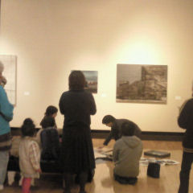

２０１１年
０１月０８日
尾道白樺美術館にて
行われた
ワークショップ
まちの観察
〜緩やかに
消失していくもの〜
に参加してみた。
講師は、Ｔ京藝大卒の
小野 環 先生。
参加者の大半は、
地元Ｏ道大の
女子大生らしい感じで
ちょっとビックリ。
美術館近隣での
フィールドワーク。
ということで、
明和電機の人っぽい
作業着で出かけた
ＫＹな私（笑）。
理系妖怪の
私としては、
美術系の人間の
モノの見方が
おもしろかったです。
※尾道白樺美術館は
清春白樺美術館の
分館だった。
ちなみに、
清春芸術村には
藤森照信が設計し、
赤瀬川原平、
南伸坊、
林丈二ら
路上観察学会の
長老たちが
建設した
茶室『徹』がある。
青い柱
消失の痕跡
阿部定
高所ドア
階段とスロープ
鉄板と折り紙
参考文献
路上観察学入門
赤瀬川源平
藤森照信
南伸坊・編